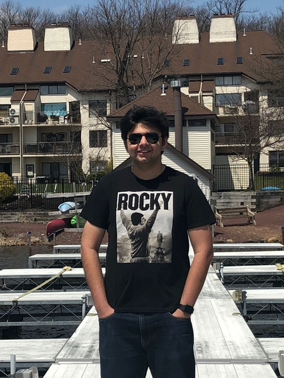

Product Manager | AI & Cloud Infrastructure
Building zero-to-one developer tools and enterprise data pipelines. Focused on shipping high-signal technical products that solve real infrastructure problems.
A zero-to-one local FinOps VS Code extension. Uses offline AST (Abstract Syntax Tree) parsing to provide real-time SQL cost estimation, intercepting runaway cloud spend with zero latency or PII/PHI risk.
Read the PRD & Architecture Doc →Secure knowledge retrieval architecture. Engineered chunking strategies and established evaluation frameworks for vector databases to minimize hallucination rates for proprietary data ingestion.
View System Design →